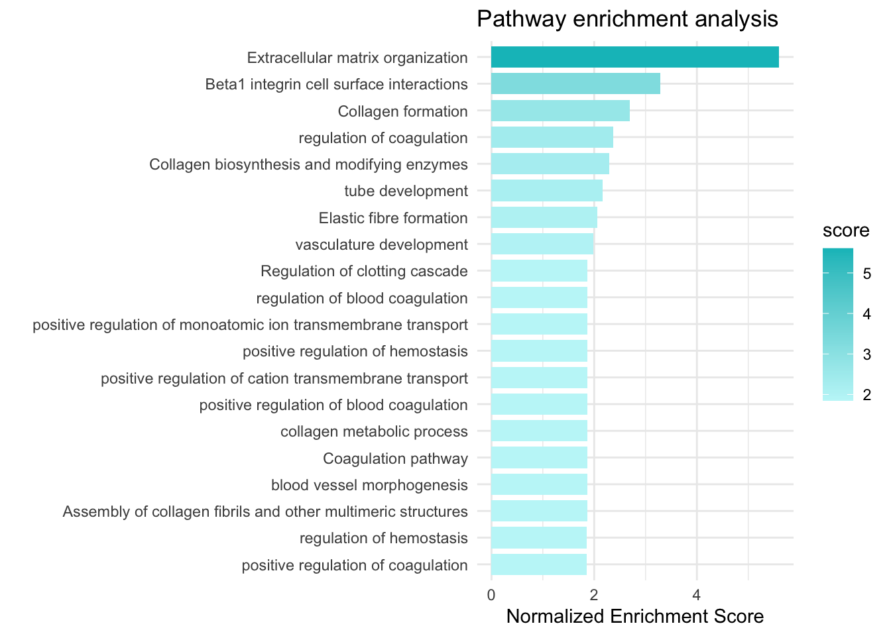
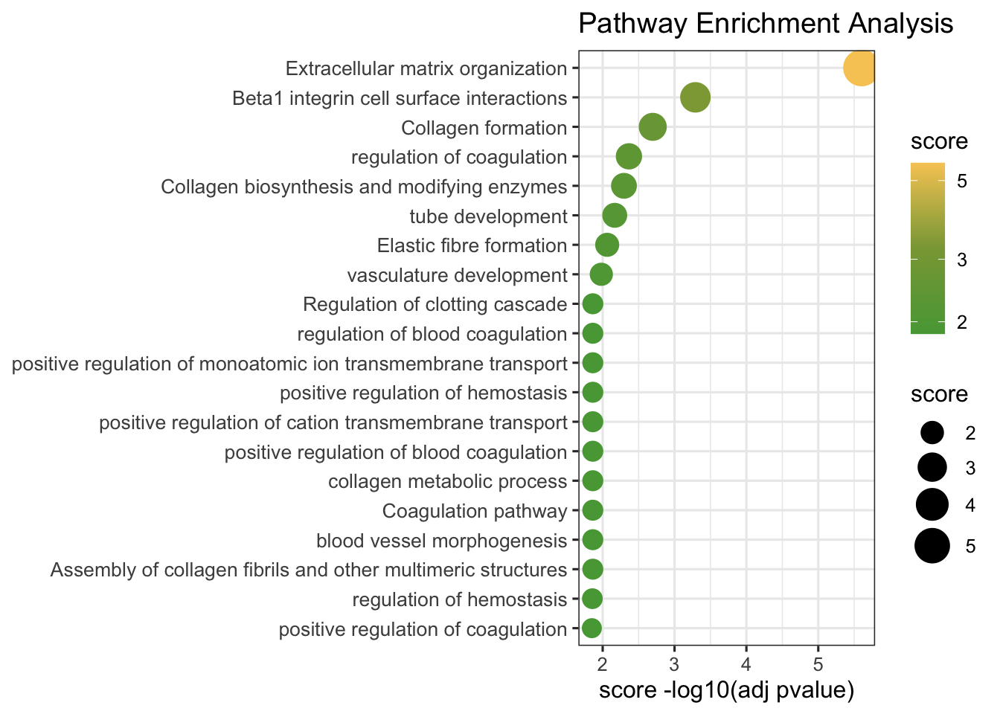

Pathway Enrichment Analysis using a defined genelist
This work is licensed under a Creative Commons Attribution-ShareAlike 4.0 Unported License. This means that you are able to copy, share and modify the work, as long as the result is distributed under the same license.
Authors: Veronique Voisin, Ruth Isserlin
Presenter: Veronique Voisin
0.9 Introduction
During this practical lab, we will perform pathway enrichment analysis using a defined gene list.
0.10 Goal of the exercise 1
For this exercise, our goal is to run pathway enrichment analysis using g:Profiler and explore the results. g:Profiler performs a gene-set enrichment analysis using a hypergeometric test (Fisher’s exact test). The Gene Ontology Biological Process, Reactome and WikiPathways sources are going to be used as pathway databases. We wil also upload our custom geneset file.
g:Profiler can be used using the website at https://biit.cs.ut.ee/gprofiler/gost. However, for this practical lab, we will run it from the g:Profiler R package.
We will run the query and explore the table of results and visualize the results as bar and dot plots.
One of the greatest features of g:Profiler is that it is updated on a regular basis and most of the previous versions are available online ont the gprofiler archive.
The gprofielr2 -g:Profiler R implementation is a wrapper for the web version. You require an internet connection to get enrichment results.
0.11 Data
g:Profiler requires a list of genes. For this analysis, we used genes we found to be differentially expressed in palbociclib-resistant samples compared with parental samples from the breast cancer cell line MCF7 (see chapter 1.
0.12 Exercise 1 - prepare the gene lists
This exercise requires the file “edgeR_resistant_vs_parental_all_genes.csv” located in the results folder.
0.12.1 Step 1 - Install and Load libraries
# CRAN and Bioconductor setup
if (!requireNamespace("BiocManager", quietly = TRUE))
install.packages("BiocManager")
# List of CRAN packages
cran_packages <- c(
"tidyverse",
"knitr",
"kableExtra",
"glue",
"RCurl",
"webshot2",
"ggridges",
"igraph",
"stringr",
"data.table",
"patchwork",
"ggdendro"
)
# List of Bioconductor packages
bioc_packages <- c(
"gprofiler2",
"GSA",
"fgsea",
"clusterProfiler",
"enrichplot"
)
# Install CRAN packages if not already installed
for (pkg in cran_packages) {
if (!requireNamespace(pkg, quietly = TRUE)) {
install.packages(pkg)
}
}
# Install Bioconductor packages if not already installed
for (pkg in bioc_packages) {
if (!requireNamespace(pkg, quietly = TRUE)) {
BiocManager::install(pkg)
}
}
# Load the libraries
library(tidyverse)
library(knitr)
library(kableExtra)
library(glue)
library(RCurl)
library(webshot2)
library(ggridges)
library(igraph)
library(stringr)
library(data.table)
library(patchwork)
library(ggdendro)
# Bioconductor packages
library(gprofiler2)
library(GSA)
library(fgsea)
library(clusterProfiler)
library(enrichplot)0.12.3 Step 3 - Run g:Profiler
The next step is to run pathway enrichment analysis using gost g:Profiler using the g:Profiler2 R package. For detailed descriptions of all the parameters that can be specified for the gost g:profiler function see the R package information - here and here.
For this query we are specifying -
- query - the set of genes of interest, as loaded in from the gene list file (
query_set). - significant - set to FALSE because we want g:Profiler to return all the results not just the ones that it deems significant by its predetermined threshold. We will filter the results for significance in a next step.
- ordered_query - set to FALSE (because we are not taking into account the order of the list)
- exclude_iea - set to TRUE. We are removing the electronic inferred annotations from the GO database
- correction_method - set to fdr. by default g:Profiler uses g:Scs
- organism - set to “hsapiens” for homo sapiens. Organism names are constructed by concatenating the first letter of the name and the family name (according to gprofiler2 documentation)
- source - the geneset source databases to use for the analysis. We recommend using GO biological process (GO:BP), WikiPathways (WP) and Reactome (Reac) but there are additional sources you can add (GO molecular function or cellular component(GO:MF, GO:CC), KEGG, transcription factors (TF), microRNA targets (MIRNA), corum complexes (CORUM), Human protein atlas (HPA),Human phenotype ontology (HP) )
0.12.3.2 observe the results
#get the gprofiler results table
enrichment_results <- gprofiler_results_UPgenes$result
#display the names of all columns
colnames(enrichment_results)## [1] "query" "significant" "p_value"
## [4] "term_size" "query_size" "intersection_size"
## [7] "precision" "recall" "term_id"
## [10] "source" "term_name" "effective_domain_size"
## [13] "source_order" "parents"## query significant p_value term_size query_size intersection_size
## 1 query_1 TRUE 0.005977645 635 74 13
## 2 query_1 TRUE 0.005977645 509 74 11
## 3 query_1 TRUE 0.005977645 61 74 5
## 4 query_1 TRUE 0.005977645 1013 74 16
## 5 query_1 TRUE 0.005977645 188 74 7
## 6 query_1 TRUE 0.005977645 73 74 5
## precision recall term_id source
## 1 0.17567568 0.02047244 GO:0035295 GO:BP
## 2 0.14864865 0.02161100 GO:0001944 GO:BP
## 3 0.06756757 0.08196721 GO:0050818 GO:BP
## 4 0.21621622 0.01579467 GO:2000026 GO:BP
## 5 0.09459459 0.03723404 GO:0050817 GO:BP
## 6 0.06756757 0.06849315 GO:0032963 GO:BP
## term_name effective_domain_size
## 1 tube development 16180
## 2 vasculature development 16180
## 3 regulation of coagulation 16180
## 4 regulation of multicellular organismal development 16180
## 5 coagulation 16180
## 6 collagen metabolic process 16180
## source_order parents
## 1 8374 GO:00072....
## 2 542 GO:00487....
## 3 12418 GO:00508....
## 4 23538 GO:00072....
## 5 12417 GO:0032501
## 6 7434 GO:00081520.12.3.3 YOUR TURN: run g:Profiler with the down genes (use same parameters as above)
##Tip: remove eval=FALSE chunk option to run the code
query_set = XXXX
gprofiler_results_DOWNgenes <- gost(query = XXXX,
significant = XXXX,
ordered_query = XXXX,
exclude_iea = XXXX,
correction_method = XXXX,
organism = XXXX,
source = c("XXXX","XXXX","XXXX"))
##observe the results (same as for the UP genes)0.12.4 Clear visualization of the results
The enrichment_results dataframe contains different columns. Let’s rearrange the table to display the most important information. We will arrange the table so it contains: the database origin, the name of each of the pathway, term size , query size, intersection size and adjusted pvalue. -
- Term size: number of genes in the pathway as it is in the database
- Query size: number of genes in our gene list
- Intersection size: number of genes overlapping between our gene list and the tested pathway
- pvalue: adjusted pvalue (corrected for multiple hypothesis testing using the Benjamini-Hochberg method)
The results are ordered by significance, from the most significant pathway (lowest p-value) to the least significant.
enrichment_results <- gprofiler_results_UPgenes$result
enrichment_results$p_value <- formatC(enrichment_results$p_value, format = "e", digits = 2)
enrichment_results = enrichment_results[ , c("source", "term_name", "term_size", "query_size", "intersection_size", "p_value")]
kable(head(enrichment_results, n=20), caption = "Enrichment Result") %>%
kable_styling(bootstrap_options = c("striped", "condensed"), font_size = 10)| source | term_name | term_size | query_size | intersection_size | p_value |
|---|---|---|---|---|---|
| GO:BP | tube development | 635 | 74 | 13 | 5.98e-03 |
| GO:BP | vasculature development | 509 | 74 | 11 | 5.98e-03 |
| GO:BP | regulation of coagulation | 61 | 74 | 5 | 5.98e-03 |
| GO:BP | regulation of multicellular organismal development | 1013 | 74 | 16 | 5.98e-03 |
| GO:BP | coagulation | 188 | 74 | 7 | 5.98e-03 |
| GO:BP | collagen metabolic process | 73 | 74 | 5 | 5.98e-03 |
| GO:BP | anatomical structure morphogenesis | 1847 | 74 | 22 | 5.98e-03 |
| GO:BP | cell adhesion mediated by integrin | 80 | 74 | 5 | 7.04e-03 |
| GO:BP | blood vessel morphogenesis | 457 | 74 | 10 | 8.11e-03 |
| GO:BP | tube morphogenesis | 562 | 74 | 11 | 8.11e-03 |
| GO:BP | regulation of multicellular organismal process | 2293 | 74 | 24 | 8.15e-03 |
| GO:BP | blood vessel development | 487 | 74 | 10 | 1.04e-02 |
| GO:BP | positive regulation of blood coagulation | 21 | 74 | 3 | 1.44e-02 |
| GO:BP | positive regulation of hemostasis | 21 | 74 | 3 | 1.44e-02 |
| GO:BP | circulatory system development | 745 | 74 | 12 | 1.45e-02 |
| GO:BP | regulation of blood coagulation | 57 | 74 | 4 | 1.45e-02 |
| GO:BP | regulation of hemostasis | 58 | 74 | 4 | 1.46e-02 |
| GO:BP | wound healing | 340 | 74 | 8 | 1.46e-02 |
| GO:BP | positive regulation of coagulation | 23 | 74 | 3 | 1.46e-02 |
| GO:BP | blood coagulation | 182 | 74 | 6 | 1.61e-02 |
0.12.4.1 YOUR TURN: visualize the results with the down genes (use same parameters as above)
##Tip: remove eval=FALSE chunk option to run the code
enrichment_results <- XXXX
enrichment_results$p_value <- formatC(XXXX)
enrichment_results = enrichment_results[ , c("XXXX", "XXXX", "XXXX", "XXXX", "XXXX", "XXXX")]
kable(head(enrichment_results, n=20), caption = "Enrichment Result") %>%
kable_styling(bootstrap_options = c("striped", "condensed"), font_size = 10)0.12.5 Step 4 - Explore top table of results
For this analysis, we chose to use 3 databases: GO:BP, Reactome and Wikipathways. If we look at the top table only, we are only going to see the results of GO:BP but it is interesting to look at the top results for each of the 3 databunique(enrichment_results$source)
enrichment_results <- gprofiler_results_UPgenes$result
##Get the name of the databases
unique(enrichment_results$source) ## [1] "GO:BP" "REAC" "WP"##Filter the dataframe to retrieve only the Reactome results
enrichment_results_Reac <- enrichment_results %>%
filter(source == "REAC")
##Now display the top 20 pathways
kable(head(enrichment_results_Reac, n=20), caption = "Enrichment Result") %>%
kable_styling(bootstrap_options = c("striped", "condensed"), font_size = 10)| query | significant | p_value | term_size | query_size | intersection_size | precision | recall | term_id | source | term_name | effective_domain_size | source_order | parents |
|---|---|---|---|---|---|---|---|---|---|---|---|---|---|
| query_1 | TRUE | 0.0000077 | 298 | 57 | 12 | 0.2105263 | 0.0402685 | REAC:R-HSA-1474244 | REAC | Extracellular matrix organization | 11056 | 930 | REAC:0000000 |
| query_1 | TRUE | 0.0008208 | 89 | 57 | 6 | 0.1052632 | 0.0674157 | REAC:R-HSA-1474290 | REAC | Collagen formation | 11056 | 403 | REAC:R-H…. |
| query_1 | TRUE | 0.0021054 | 67 | 57 | 5 | 0.0877193 | 0.0746269 | REAC:R-HSA-1650814 | REAC | Collagen biosynthesis and modifying enzymes | 11056 | 400 | REAC:R-H…. |
| query_1 | TRUE | 0.0029160 | 76 | 57 | 5 | 0.0877193 | 0.0657895 | REAC:R-HSA-3000178 | REAC | ECM proteoglycans | 11056 | 851 | REAC:R-H…. |
| query_1 | TRUE | 0.0033756 | 44 | 57 | 4 | 0.0701754 | 0.0909091 | REAC:R-HSA-1566948 | REAC | Elastic fibre formation | 11056 | 875 | REAC:R-H…. |
| query_1 | TRUE | 0.0033756 | 84 | 57 | 5 | 0.0877193 | 0.0595238 | REAC:R-HSA-216083 | REAC | Integrin cell surface interactions | 11056 | 1267 | REAC:R-H…. |
| query_1 | TRUE | 0.0097759 | 60 | 57 | 4 | 0.0701754 | 0.0666667 | REAC:R-HSA-2022090 | REAC | Assembly of collagen fibrils and other multimeric structures | 11056 | 186 | REAC:R-H…. |
| query_1 | TRUE | 0.0256174 | 140 | 57 | 5 | 0.0877193 | 0.0357143 | REAC:R-HSA-1474228 | REAC | Degradation of the extracellular matrix | 11056 | 748 | REAC:R-H…. |
| query_1 | TRUE | 0.0316913 | 39 | 57 | 3 | 0.0526316 | 0.0769231 | REAC:R-HSA-140877 | REAC | Formation of Fibrin Clot (Clotting Cascade) | 11056 | 986 | REAC:R-H…. |
| query_1 | TRUE | 0.0322168 | 42 | 57 | 3 | 0.0526316 | 0.0714286 | REAC:R-HSA-419037 | REAC | NCAM1 interactions | 11056 | 1577 | REAC:R-H…. |
| query_1 | TRUE | 0.0322168 | 516 | 57 | 9 | 0.1578947 | 0.0174419 | REAC:R-HSA-9006934 | REAC | Signaling by Receptor Tyrosine Kinases | 11056 | 2399 | REAC:R-H…. |
| query_1 | TRUE | 0.0338224 | 44 | 57 | 3 | 0.0526316 | 0.0681818 | REAC:R-HSA-8948216 | REAC | Collagen chain trimerization | 11056 | 401 | REAC:R-H…. |
| query_1 | TRUE | 0.0449470 | 675 | 57 | 10 | 0.1754386 | 0.0148148 | REAC:R-HSA-109582 | REAC | Hemostasis | 11056 | 1168 | REAC:0000000 |
0.12.5.1 YOUR TURN: DISPLAY THE TOP 20 PATHWAYS FOR THE WIKIPATHWAY DATABASE (“WP”) and the down genes
enrichment_results <- gprofiler_results_DOWNgenes$result
##Get the name of the databases
unique(enrichment_results$source)
##Filter the dataframe to retrieve only the Reactome results
enrichment_results_WP <- enrichment_results %>%
XXXX(source == "XXXX")
##Now display the top 20 pathways
kable(head(enrichment_results_WP, n=20), caption = "Enrichment Result") %>%
kable_styling(bootstrap_options = c("striped", "condensed"), font_size = 10)0.12.6 Step 5 - Filter results by geneset size
Restrict the results to just the ones that have at maximum gene-set size of 1000 and a minimum gene-set size of 10 and with an adjusted pvalue of 0.05.-
- maximum gene-set size of 1000: will remove very generic pathway terms that are less informative like “regulation of gene expression”
- minimum gene-set size of 10: will remove small pathways where the pvalue is significant athough the overlap size is very small
- p_thres: aim is to retrieve only pathways that are significant under this adjusted pvalue threshold of 0.01 (1% false positive)
enrichment_results <- gprofiler_results_UPgenes$result
min_gs_size = 10
max_gs_size = 1000
p_thres = 0.01
# filter by params defined above
# by default we have set the max and min gs size to 250 and 3, respectively.
##the pvalue was stored as a character vector, we have to transform back into a numerical vector to be able to use it to filter values
enrichment_results$p_value <- as.numeric(enrichment_results$p_value)
enrichment_results_mxgssize_1000_min_10_adjp_0_01 <-
subset(enrichment_results,
term_size >= min_gs_size &
term_size <= max_gs_size &
p_value <= p_thres )
#
myrows = nrow(enrichment_results_mxgssize_1000_min_10_adjp_0_01)
print(glue("It results in {myrows} selected pathways with maximum gene-set size of {max_gs_size} and minimum gene-set of {min_gs_size} with an adjusted p-value of {p_thres} . "))## It results in 15 selected pathways with maximum gene-set size of 1000 and minimum gene-set of 10 with an adjusted p-value of 0.01 .0.12.6.1 YOUR TURN: using the enrichment results for the down genes, use gene-set size filters and FDR filters and display the results
In a second step, try different thresholds of maximum gene-set size and adjusted pvalue threshold: 500 and 250 for * max_gs_size and 0.05 or 0.001 for pvalue-
- Option 1
- max_gs_size = 500
- p_thres = 0.001
or
- Option 2
- max_gs_size = 250
- p_thres = 0.05
How many pathways do you get for each option (nrow())??
enrichment_results <- gprofiler_results_DOWNgenes$result
min_gs_size = XXXX
max_gs_size = XXXX
p_thres = XXXX
# filter by params defined above
# by default we have set the max and min gs size to 250 and 3, respectively.
##the pvalue was stored as a character vector, we have to transform back into a numerical vector to be able to use it to filter values
enrichment_results$p_value <- as.numeric(enrichment_results$p_value)
enrichment_results <- XXXXX
#
myrows = nrow(enrichment_results)
print(glue("It results in {myrows} selected pathways with maximum gene-set size of {max_gs_size} and minimum gene-set of {min_gs_size} with an adjusted p-value of {p_thres} . "))0.12.7 Step 6 - Run g:profiler with your own genesets (example using BaderLab genesets)
With regards to pathway sets there are two options when using g:Profiler -
- Use the genesets that are supplied by g:Profiler as we just did.
- Upload your own genesets.
The most common reasons for supplying your own genesets is the ability to use up to date annotations or in-house annotations that might not be available in the public sphere yet. It can be used to test the enrichment in a particular pathway of interest that might not be in the general pathway database but that you obtained for example by extracting the data from a published paper. You need to format this pathway in a .gmt file.
In this example, we will upload the Baderlab gene set file that contains multiple database sources. We filtered the gene-set prior to uploading the gene-set file to g:Profiler. The Baderlab gene set file combines different sources of databases and you can find more information at: https://baderlab.org/GeneSets
’‘’Why do we filter the geneset before running gprofiler’’’
The g:Profiler interface only allows for filtering genesets by size only after the analysis is complete. After the analysis is complete means the filtering is happening after Multiple hypothesis testing. Filtering prior to the analysis will generate more robust results because we exclude the uninformative large genesets prior to testing changing the sets that multiple hypothesis filtering will get rid of.
We have 1 example of gmt files with different filtering thresholds : * genesets less of equal than 500 genes
Load in the GMT file
This step will take the gmt file that wedownloaded locally and upload them into our R environment in the GSA.genesets object called “genesets_baderlab_genesets”. The capture.output() function is only there to redirect the printed messages for a clearer notebook.
The format of the GMT file is described https://software.broadinstitute.org/cancer/software/gsea/wiki/index.php/Data_formats#GMT:Gene_Matrix_Transposed_file_format.28.2A.gmt.29 and consists of rows with the following
- Name
- Description
- tab delimited list of genes a part of this geneset
Write out the gmt file with genenames
In order to use your own genesets with g:Profiler you need to upload the the file to g:Profiler server first. The function will return an ID that you need to specify in the organism parameter of the g:Profiler gost function call. It is done by using the upload_GMT_file() function which is included in the gprofiler2 package. Note: it took about 2 minutes to run this chunck of code.
dest_gmt_file_500 ="data/Human_GOBP_AllPathways_filtered_500orLessV2.gmt"
custom_gmt_max500 <- upload_GMT_file(
gmtfile=dest_gmt_file_500)## Your custom annotations ID is gp__QITv_rgpc_yd0.
## You can use this ID as an 'organism' name in all the related enrichment tests against this custom source.## Just use: gost(my_genes, organism = 'gp__QITv_rgpc_yd0')UPgenes <- res$gene[res$logFC>0 & res$FDR <= 0.001]
DOWNgenes <- res$gene[res$logFC<0 & res$FDR <= 0.001]
gprofiler_results_custom_max500_UPgenes <- gost(query = UPgenes ,
significant=TRUE,
ordered_query = FALSE,
exclude_iea=TRUE,
correction_method = "fdr",
organism = custom_gmt_max500
)## Detected custom GMT source requestenrichment_results_UPgenes <- gprofiler_results_custom_max500_UPgenes$result
enrichment_results_UPgenes$parents <- sapply(
enrichment_results_UPgenes$parents,
function(x) paste(x, collapse = ", ")
)
write.csv( enrichment_results_UPgenes, "results/enrichment_results_gprofiler_UPgenes.csv")0.12.7.1 YOUR TURN: perform the same task with the down genes
gprofiler_results_custom_max500_DNgenes <- gost(
query = XXXX ,
significant=XXXX,
ordered_query = XXXX,
exclude_iea=XXXX,
correction_method = "XXX",
organism = XXXX
)
enrichment_results_DNgenes <- gprofiler_results_custom_max500_DNgenes$result
enrichment_results_DNgenes$parents <- sapply(
enrichment_results_DNgenes$parents,
function(x) paste(x, collapse = ", ")
)
write.csv( enrichment_results_DNgenes, "results/enrichment_results_gprofiler_DNgenes.csv")0.13 Exercise 2 - visualization
We will use clusterProfiler style visualization. ### Step 1 - Bar plot
##Calculate a score (small very significant adjusted p value will turn into a large score)
enrichment_results_UPgenes$score = -log10(as.numeric(enrichment_results_UPgenes$p_value))
enrichment <- enrichment_results_UPgenes %>%
as_tibble() %>%
arrange(desc(score)) %>%
slice_head(n = 20)
p = ggplot(enrichment, aes(reorder(term_name, score), score)) +
geom_col(aes(fill = score), width=0.8) +
scale_fill_gradient(low = "#C1F6F8", high = "#00BFC4")+
coord_flip() +
labs(x="", y="Normalized Enrichment Score",title="Pathway enrichment analysis ") +
theme_minimal()
p
0.13.1 Step 2 - Dot plot with segment
enrichmentTop20 <- enrichment %>%
arrange(desc(score)) %>%
slice_head(n = 20)
p = ggplot(enrichmentTop20, aes(
y = fct_reorder(term_name, score),
x = score,
color = score,
size = score
)) +
geom_point() +
scale_color_gradientn(
colours = c("#56A443", "#8AA443", "#f7ca64"),
trans = "log10",
guide = guide_colorbar(reverse = FALSE, order = 1)
) +
scale_size_continuous(range = c(4, 8)) +
theme_bw(base_size = 12) +
xlab("score -log10(adj pvalue)") +
ylab(NULL) +
ggtitle("Pathway Enrichment Analysis") +
theme(
axis.text.y = element_text(size = 10)
)
p